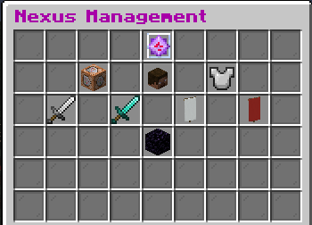
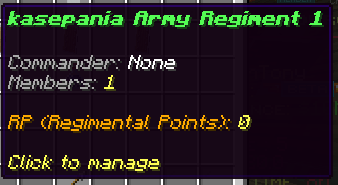
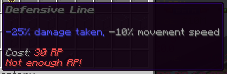
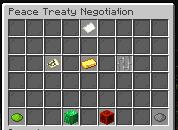

Everything you need to know about warfare, armies, and diplomacy
/nexus move — relocate (peacetime only)
The Nexus (an end crystal) is the heart of your town. It's the target in any conflict—if destroyed, your town is dissolved. Use /nexus to open the GUI for managing wars, armies, and raids.
/nexus move to relocate (cannot be used during war)The Nexus must be reasonably accessible to attackers. Staff will relocate violations.
/nexus Open war management GUI/nexus move Relocate Nexus (peace only)/nexus create Create Nexus if missing/nexus remove Permanently remove Nexus (peace only)
Critical rule: To damage an enemy Nexus during a siege, you must be a member of a regiment. Players not in a regiment cannot deal damage to Nexuses.
Any nation member can join a regiment using:
/army join 1 Join Regiment 1/army join 2 Join Regiment 2/army join 3 Join Regiment 3The first person to join a regiment (usually the nation leader) automatically creates that regiment and becomes its leader.
Once regiments exist, leaders can be appointed through the Nexus GUI or commands:
/army leader set [player] 1 Set player as Regiment 1 leader/army leader remove [player] Remove regiment leader statusWhen a regiment member kills an enemy player during war or raids, their regiment earns Regiment Points (RP). These are pooled at the regiment level and can be spent by regiment leaders on formations—temporary buffs for all regiment members.

Leadership tip: Appoint regiment leaders so they can purchase formations in real-time during battle, without needing to contact the General. This creates a more responsive fighting force.
Remember: If you're not in a regiment, you cannot damage the enemy Nexus during sieges. Join a regiment before war is declared.
A formal war declaration escalates to a siege—total war with no time limit until one side's Nexus is destroyed or peace is signed.
/war declare nation [nation] Declare war on entire nation/war declare town [town] Declare war on specific town/war status Check your war status/war list List all active wars/war peace Request unconditional surrenderRaids are time-bound operations with specific objectives. Unlike sieges, they don't allow block destruction or Nexus damage.
Steal resources from enemy storage.
Capture and hold territory.
Disable factories and infrastructure.
These rules are enforced during sieges. Violations result in penalties up to automatic war loss.
Attackers must breach walls, not build over them. Building towers or pillars to bypass fortifications is prohibited.
Penalty: Minor to moderate
Walls cannot be filled with lava or made entirely of obsidian in ways that make breaching impossibly tedious. Staff will remove offending wall sections.
Penalty: Section removed, minor to moderate
All alliances must be set before war begins. No mid-war alliance switching or sudden inclusions.
Penalty: 3x upkeep costs for up to a week for all involved
Full-scale sieges require a valid casus belli (justification). Raids and open-world PvP are exempt.
Penalty: Automatic war loss
Traps that instantly kill with no counterplay are prohibited. Defenses should create challenges, not unavoidable deaths.
Penalty: Trap removed, minor to moderate
A well-defended Nexus combines layered architecture, active defenders, and smart use of game mechanics—while staying within placement rules.
Create multiple defensive rings around your Nexus. Each layer should:
No amount of obsidian replaces coordinated players. Use voice chat, establish rotations, and communicate with regiment leadership.
Use Regiment Points to purchase defensive formations that buff all regiment members in the area. Activate through the Nexus GUI during critical moments.

Not all conflicts need to end in destruction. Use diplomacy to achieve goals without fighting—or to formalize victory.
Before declaring war, issue an ultimatum through the Nexus GUI. State your terms and give the opponent a chance to comply. A refused ultimatum serves as a valid casus belli.
/ultimatum issue [opponent] Open negotiation GUINegotiate an end to active wars through the same GUI. Both sides can propose and agree on terms.
/peace propose [opponent] Open peace negotiationPermanent transfer of towns or chunks
Temporary control (up to 30 days)
One-time currency payment
Jail specific players for up to 7 days
Diplomatic strategy: Use ultimatums to gauge enemy resolve. In peace talks, temporary occupation of key resources may be easier to achieve than permanent cession—and sets up future conflicts.